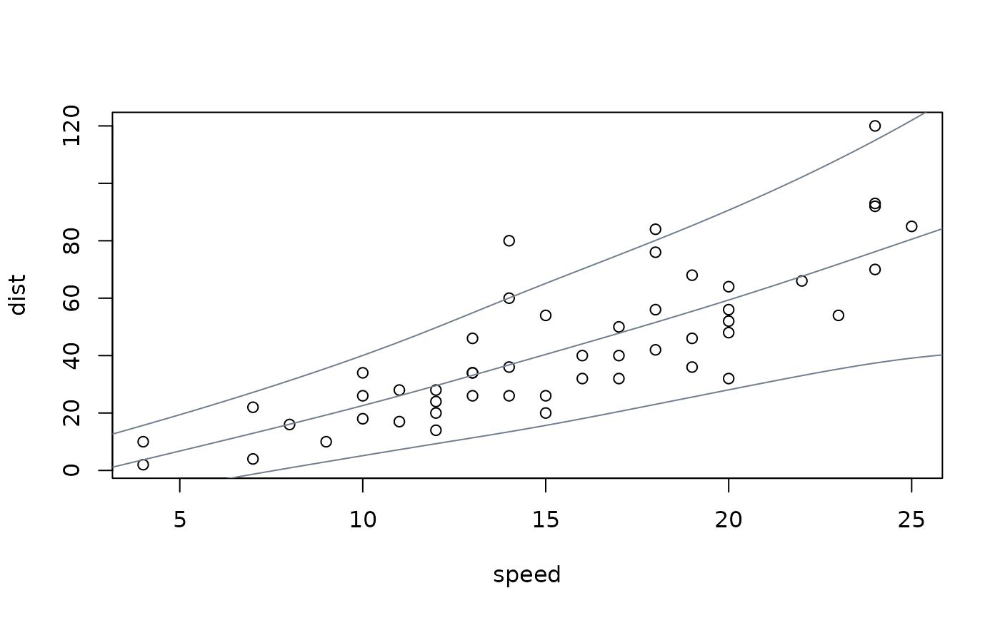
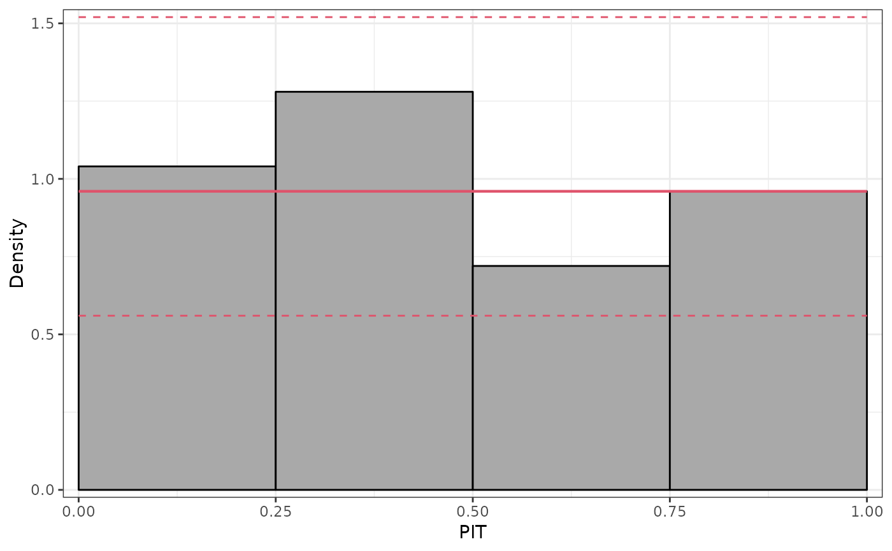
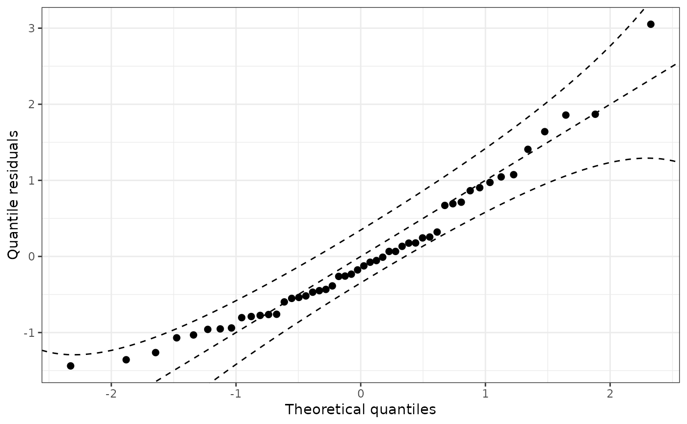

prodist.bamlss.RdMethods for bamlss model objects for extracting fitted (in-sample) or predicted (out-of-sample) probability distribution objects.
# S3 method for bamlss
prodist(object, ..., distributions3 = FALSE)A model object of class bamlss.
Arguments passed on to predict.bamlss,
e.g., newdata.
logical. If a dedicated distributions3 object
is available (e.g., such as Normal) and uses
the same parameterization, should this be used instead of the general
BAMLSS distribution?
An object inheriting from distribution.
To facilitate making probabilistic forecasts based on bamlss
model objects, the prodist method extracts fitted or
predicted probability distribution objects. Internally, the
predict.bamlss method from the bamlss package is
used first to obtain the distribution parameters. Subsequently, the corresponding distribution
object is set up using BAMLSS, enabling the workflow provided by
the distributions3 package.
Note that these probability distributions only reflect the random variation in the dependent variable based on the model employed (and its associated distributional assumption for the dependent variable). This does not capture the uncertainty in the parameter estimates.
if(!requireNamespace("bamlss")) {
if(interactive() || is.na(Sys.getenv("_R_CHECK_PACKAGE_NAME_", NA))) {
stop("not all packages required for the example are installed")
} else q() }
## packages, code, and data
library("bamlss")
#> Loading required package: coda
#> Loading required package: colorspace
#> Loading required package: mgcv
#> Loading required package: nlme
#> This is mgcv 1.8-40. For overview type 'help("mgcv-package")'.
#>
#> Attaching package: ‘bamlss’
#> The following object is masked from ‘package:mgcv’:
#>
#> smooth.construct
library("distributions3")
data("cars", package = "datasets")
## fit heteroscedastic normal BAMLSS model
f <- list(dist ~ s(speed), sigma ~ s(speed))
m <- bamlss(f, data = cars, family = "gaussian")
#> AICc 442.5530 logPost -273.890 logLik -206.664 edf 11.081 eps 0.5053 iteration 1
#> AICc 426.3285 logPost -246.644 logLik -202.263 edf 8.7705 eps 0.0612 iteration 2
#> AICc 419.0112 logPost -223.437 logLik -201.867 edf 6.4931 eps 0.1609 iteration 3
#> AICc 418.8568 logPost -242.479 logLik -201.746 edf 6.5260 eps 0.0257 iteration 4
#> AICc 418.8495 logPost -247.716 logLik -201.663 edf 6.5838 eps 0.0027 iteration 5
#> AICc 418.8489 logPost -248.030 logLik -201.655 edf 6.5896 eps 0.0003 iteration 6
#> AICc 418.8488 logPost -248.086 logLik -201.654 edf 6.5907 eps 0.0001 iteration 7
#> AICc 418.8488 logPost -248.086 logLik -201.654 edf 6.5907 eps 0.0001 iteration 7
#> elapsed time: 0.44sec
#> Starting the sampler...
#>
#> | | 0% 3.45sec
#> |* | 5% 2.72sec 0.14sec
#> |** | 10% 2.53sec 0.28sec
#> |*** | 15% 2.30sec 0.41sec
#> |**** | 20% 2.24sec 0.56sec
#> |***** | 25% 2.10sec 0.70sec
#> |****** | 30% 1.96sec 0.84sec
#> |******* | 35% 1.84sec 0.99sec
#> |******** | 40% 1.71sec 1.14sec
#> |********* | 45% 1.62sec 1.32sec
#> |********** | 50% 1.48sec 1.48sec
#> |*********** | 55% 1.33sec 1.63sec
#> |************ | 60% 1.19sec 1.79sec
#> |************* | 65% 1.04sec 1.93sec
#> |************** | 70% 0.89sec 2.08sec
#> |*************** | 75% 0.75sec 2.24sec
#> |**************** | 80% 0.60sec 2.38sec
#> |***************** | 85% 0.45sec 2.54sec
#> |****************** | 90% 0.30sec 2.68sec
#> |******************* | 95% 0.15sec 2.85sec
#> |********************| 100% 0.00sec 3.02sec
## obtain predicted distributions for three levels of speed
d <- prodist(m, newdata = data.frame(speed = c(10, 20, 30)))
print(d)
#> [1] "BAMLSS gaussian distribution (mu = 22.60, sigma = 10.61)"
#> [2] "BAMLSS gaussian distribution (mu = 59.36, sigma = 19.02)"
#> [3] "BAMLSS gaussian distribution (mu = 102.27, sigma = 38.74)"
## obtain quantiles (works the same for any distribution object 'd' !!)
quantile(d, 0.5)
#> [1] 22.59611 59.36410 102.26963
quantile(d, c(0.05, 0.5, 0.95), elementwise = FALSE)
#> q_0.05 q_0.5 q_0.95
#> [1,] 5.141746 22.59611 40.05046
#> [2,] 28.072768 59.36410 90.65543
#> [3,] 38.550621 102.26963 165.98863
quantile(d, c(0.05, 0.5, 0.95), elementwise = TRUE)
#> [1] 5.141746 59.364098 165.988629
## visualization
plot(dist ~ speed, data = cars)
nd <- data.frame(speed = 0:240/4)
nd$dist <- prodist(m, newdata = nd)
nd$fit <- quantile(nd$dist, c(0.05, 0.5, 0.95))
matplot(nd$speed, nd$fit, type = "l", lty = 1, col = "slategray", add = TRUE)

## moments
mean(d)
#> [1] 22.59611 59.36410 102.26963
variance(d)
#> [1] 112.6039 361.9041 1500.6639
## simulate random numbers
random(d, 5)
#> r_1 r_2 r_3 r_4 r_5
#> [1,] 22.88307 42.76716 18.29586 54.45399 38.10047
#> [2,] 29.57215 99.87671 44.25336 60.84829 29.04048
#> [3,] 85.63005 145.12931 77.21325 132.16575 82.28013
## density and distribution
pdf(d, 50 * -2:2)
#> d_-100 d_-50 d_0 d_50 d_100
#> [1,] 3.902994e-31 2.582256e-12 0.0038950626 0.001339502 1.050233e-13
#> [2,] 1.210959e-17 1.396858e-09 0.0001611051 0.018578059 2.142031e-03
#> [3,] 1.237728e-08 4.547058e-06 0.0003157416 0.004144092 1.028071e-02
cdf(d, 50 * -2:2)
#> p_-100 p_-50 p_0 p_50 p_100
#> [1,] 3.558603e-31 3.924734e-12 0.0166106525 0.99509523 1.0000000
#> [2,] 2.712378e-17 4.493668e-09 0.0009026572 0.31127793 0.9836627
#> [3,] 8.877633e-08 4.234681e-05 0.0041452260 0.08862074 0.4766399
## further diagnostics: graphical and scores
pithist(m)

qqrplot(m)

proscore(m, type = c("LogLik", "CRPS", "MAE", "MSE"), aggregate = TRUE)
#> LogLik CRPS MAE MSE
#> 1 -4.04353 8.023004 11.21879 222.3045
## note that proscore can replicate logLik() value
proscore(m, aggregate = sum)
#> loglikelihood
#> 1 -202.1765
logLik(m)
#> 'log Lik.' -204.6246 (df=5.268455)
## Poisson example
data("FIFA2018", package = "distributions3")
m2 <- bamlss(goals ~ s(difference), data = FIFA2018, family = "poisson")
#> AICc 364.2629 logPost -199.843 logLik -177.938 edf 4.0281 eps 5.5805 iteration 1
#> AICc 359.9880 logPost -188.485 logLik -177.169 edf 2.7419 eps 1.1530 iteration 2
#> AICc 359.9857 logPost -188.484 logLik -177.168 edf 2.7419 eps 0.0589 iteration 3
#> AICc 359.9857 logPost -188.484 logLik -177.168 edf 2.7419 eps 0.0001 iteration 4
#> AICc 359.9857 logPost -188.484 logLik -177.168 edf 2.7419 eps 0.0001 iteration 4
#> elapsed time: 0.09sec
#> Starting the sampler...
#>
#> | | 0% 1.55sec
#> |* | 5% 1.41sec 0.07sec
#> |** | 10% 1.28sec 0.14sec
#> |*** | 15% 1.29sec 0.23sec
#> |**** | 20% 1.23sec 0.31sec
#> |***** | 25% 1.16sec 0.39sec
#> |****** | 30% 1.12sec 0.48sec
#> |******* | 35% 1.04sec 0.56sec
#> |******** | 40% 0.95sec 0.63sec
#> |********* | 45% 0.88sec 0.72sec
#> |********** | 50% 0.80sec 0.80sec
#> |*********** | 55% 0.72sec 0.88sec
#> |************ | 60% 0.64sec 0.96sec
#> |************* | 65% 0.56sec 1.05sec
#> |************** | 70% 0.48sec 1.12sec
#> |*************** | 75% 0.40sec 1.20sec
#> |**************** | 80% 0.32sec 1.30sec
#> |***************** | 85% 0.24sec 1.38sec
#> |****************** | 90% 0.16sec 1.46sec
#> |******************* | 95% 0.08sec 1.54sec
#> |********************| 100% 0.00sec 1.62sec
d2 <- prodist(m2, newdata = data.frame(difference = 0))
print(d2)
#> [1] "BAMLSS poisson distribution (lambda = 1.236)"
quantile(d2, c(0.05, 0.5, 0.95))
#> [1] 0 1 3